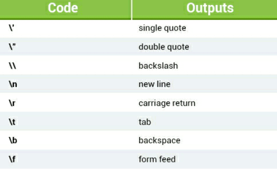

JavaScript is one of the most popular programming languages
on earth and is used to add interactivity to webpages, process data, as well
as create various applications (mobile apps, desktop apps, games, and more)
I'm very interested to learn this language better, since it's the first real programming language
I get to learn, CSS and HTML are not considered programming languages,
I'm also a little scared, it took me a while to learn CSS and HTML,
I can't even imagine how long it will take me to learn JavaScript, but the
only way to find out is to begin.
Creating your first JavaScript
First, let's start with adding JavaScript to the webpage,
we can do that by using the script element inside out HTML,
you can use this element inside the head section or body section,
it is recommended to use it at the bottom of the body so that
the webpage loads completely before JavaScript is rendered.
You can of course the script element multiple times, you don't have to use
it only once, also, just like when adding CSS you can also write
external JavaScript code in a different document and link
it to this document by writing <script src="example.js'> </script>.
IT'S TIME NOW! To take the FIRST step to SUCEES! The FIRST step to becoming the
GREATEST WEB DEVELOPER of all! Let's write our first JAVASCRIPT code!
To add a comment inside your JavaScript you
can either write what you want after double slash //, or between /* and */.
JavaScript code:
<script>
//this is a single line comment
/* This is
a multy
line comment */
alert("Welcome my friends to the first page of my JavaScript notes!");
</script>
Outcome:
Using comments is good, use them a lot to keep your code organized,
your future self will thank you a lot, since it will make things way
easier if you ever need to go over the code again to fix stuff, it's
also required to used comments when working with other people on a big project,
reading code written by someone else can be one of the hardest things, really,
your co-workers will be very thankful if you wrote a description of what your
code does.
JavaScript Variables
Variables are containers for storing data values.
The value of a variable can change through the
program. To declare a variable you can use the var
keyword:
JavaScript code:
<script>
var x = "Hello, I'm a variable!";
document.write(x);
</script>
Outcome:
JavaScript is case sensitive, if for example
the x was capitalized and I wrote document.write(x)
it wouldn't work.
In JavaScript the equal sign (=) is called the "assignment"
operator, rather than an "equal to" operator. For example, x = y will asign
the value of y to y.
Using variables is useful in many ways, you might have a thousand lines
of code that may include the variable x, when you change the value of x one time,
it will automatically be changed in all places where you used it.
Naming rules:
-The first character must be a letter, an underscore
(_), or a dollar sign ($). Subquent characters may be
letters, digits, underscores, or dollar signs.
-Numbers are not allowed as the first character.
-Variable names cannot include mathematical or logical operators
in the name. For instance, 2*something or this+that.
-JavaScript names must not contain spaces.
There are some other rules to follow when namking your JavaScript variables:
-You must not use any special symbols, like #num,
num%, etc.
-Be sure that you do not use any of the following JavaScript reversed words:
When you get more familiar with JavaScript, remembering these keywords
will be much easier.
Data Types
The term data type refers to the types of
values with which a program can work. JavaScript variables
can hold many data types, such as numbers, strings,
arrays, and more.
Unlike many other programming languages, JavaScript does
not define different types of numbers, like integers, short,
long, floating-point, etc.
JavaScript numbers can be written with or without demicals.
JavaScript code:
<script>
var x = 69 /* A number without decimals */, y = 10.5 /* A number with decimals */;
document.write('"', x, '"', " is a better number than ", '"', y, '"', " and that's a fact! ");
</script>
Outcome:
JavaScript strings are used for storing and
manipulating text. A string can be any
text that appears within quotes, you can use single
or double quotes, if you use double quotes then you can
use single quotes inside the string without a problem, the
opposite is also true, if you use single quotes then you are able to use
double quotes inside the string without any problem.
JavaScript code:
<script>
var x = "My name is 'Karak10' and I'm cool.", y='My name is "Karak10" and Im cool.';
document.write(x, "<br>");
document.write(y);
</script>
Outcome:
What if you want to use same quotes that you used to surround the string inside
the string? In the code above for example, I wanted to put a single quote at I'm
in variable y but I couldn't because the string was surrounded by single quotes,
there is a way to do that, by simply using backslash, like this: \', or \",
you can also use the backslash to insert other special characters
into a string.
JavaScript code:
<script>
var x = 'My name is "Karak10" and I\'m cool.';
document.write(x);
</script>
Outcome:
These special characters can be added using backslash:

In JavaScript Boolean, you can have one or two values,
either true or false. These are useful when you need a data type
that can only have one or two values, such as Ye/No,
On/Off, True/False.
Example:
<script>
var isActive = true;
var isInactive = false;
</script>
Math Operators
Arithmetic operators perform arithmetic functions
on numbers (literals or variables).
In the example below the addition operator is used
to determine the sum of two numbers.
JavaScript Code:
var x = 5 + 5, y = 5 + 5;
document.write(x + y);
Outcome:
Let's now use substraction, multiplication
and division operators to play around a little, I don't think
I need to explain basic math operators like these.
JavaScript Code:
var x = 10 / 2, y = 2.5 * 2, b = 10 - 5;
document.write(x + y + b)
Outcome:
Now, about modulus operator, I have seen this one in the past so I know
how it works, it basically works like division operator, however,
if I did 10 / 3 for example, 3 can fit three times
inside 10 when it gets to 9, if we added 3 one more time
for example it would surpass 10 and went to 12, we now get
9, and do 10 - 9 which equals 1, that's the number
we would get if we did 10 % 3, it lets us know how much numbers away
from 10 it gets, if that makes any sense, I'm not really the best at
explaining stuff, especially in english since that's not my native language,
if we did 10 % 5 we would get 0, since 5 can fit
perfectly inside 10, if we did 8 % 3 we would get 2,
since after 3 gets to 6 if we added anoter 3 it
would surpass 8 and go to 9, if we do 8 - 6
we get 2, I hope you understand.
JavaScript Code:
var x = 10 % 3, y = 10 % 5, b = 8 % 3;
document.write("10 % 3 = ", x,
" <br> 10 % 5 = ", y,
" <br> 8 % 3 = ", b);
Outcome:
About the Increment and Decrement operators now, if placed before the operand,
for example, if we wrote var b = 10, a = ++b;, then, a would get the
value of b and would get increased by one, and b would also get
increased by one, if we wrote b++ then a would
get the value of b without being increased by one, and b
would only be increased by one.
The same goes for --b and b--, if placed after, then
a would get the value of b, and b would be
decreased this time by one, if placed before then
a would get the value of b and would be decreased by one,
and b also would be decreased by one, making them have the
same value.
I really don't know how this is ever going to be useful, but I guess I'm gonna find out
in the future, that's enough of math for now, I'm going to take a break and continue tomorrow.
Here is a project I made using simply math operators, check this out:
JavaScript Code:
<script>
var money = prompt("Enter how much money you have");
var price = 20;
var answer = ( money - price < 0 ) ? "you cannot buy the product, in order to buy it you will need ":
"if you buy the product you will be left with ";
var result = ( money - price < 0 ) ? price - money: money - price;
document.write( "The price of the the product is ", price, "$ therefore, since you have ",
money,"$ ", answer, result, "$");
<script>
Assignment operators assign values to JavaScript variables.
JavaScript Code:
<script>
var x = 5;
document.write("x += 10 could also be written as x = x + 10, which equals ", x += 10,
"<br> You could assume we just did x + 10, but that's false, because x is now 15, if we now do x -= 5 for example we would assign x to be ", x-=5,
"<br> Since now x = 10 if we did x - 5 we would get ", x - 5, " however, x would continue being 10, that's the difference");
<script>
Outcome:
Comparison Operators
Comparison operators are used in logical statements to determine
equality or difference between variables or
values. They return true or false.
See the example below, if x = 15 then it will write true,
else it will write false:
JavaScript code:
<script>
var x = 15;
(x == 15) ? document.write (true): document.write(false);
</script>
Outcome:
The table below explains the comparison operators:
=== and !== are pretty much
the same with == and !=, however,
if I wrote var x = '10'; for example, which
is a string when I wrote x == 10
it would come up as true, even tho 10 is a number,
that's where we use === which checks
if it's equal and of same type, I
hope you understand.
Logical Operators
Logical operators, also known as Boolean Operators,
evaluate the expression and return true or flase.
For example:
6<5 && 7<8 will return false because first operator is not true 6<5 || 7<8 will return true because second operator is true !(6<5) will return true because the operator is false
You can also remember it like this:
AND - && OR - || NOT - !
JavaScript Code:
<script>
var x = 10, y = 15;
(x < 15 && y == 16) ? document.write("True <br>"): document.write("False <br>");
(x < 15 || y == 16)? document.write("True <br>"): document.write("False <br>");
(!(x > 15))? document.write("True <br>"): document.write("False <br>");
</script>